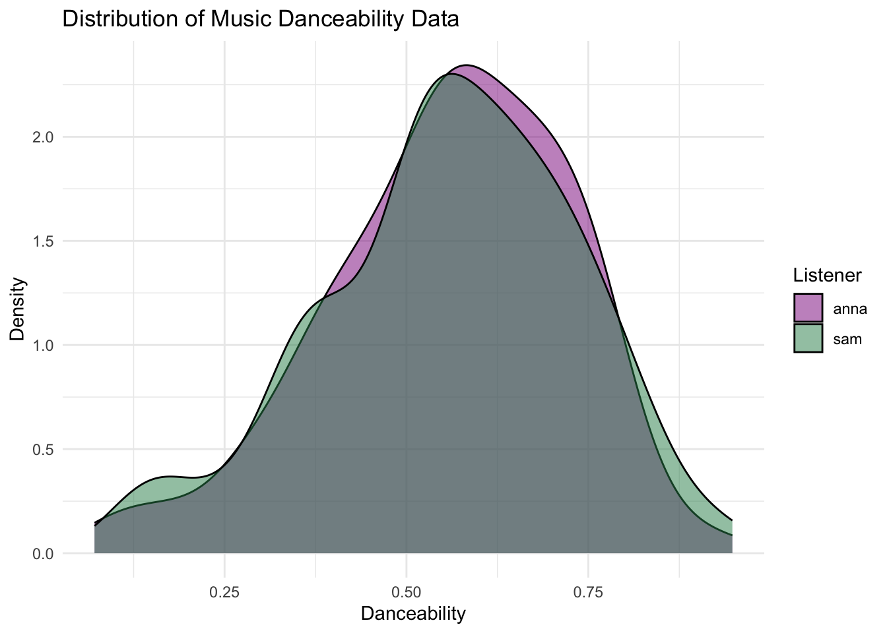
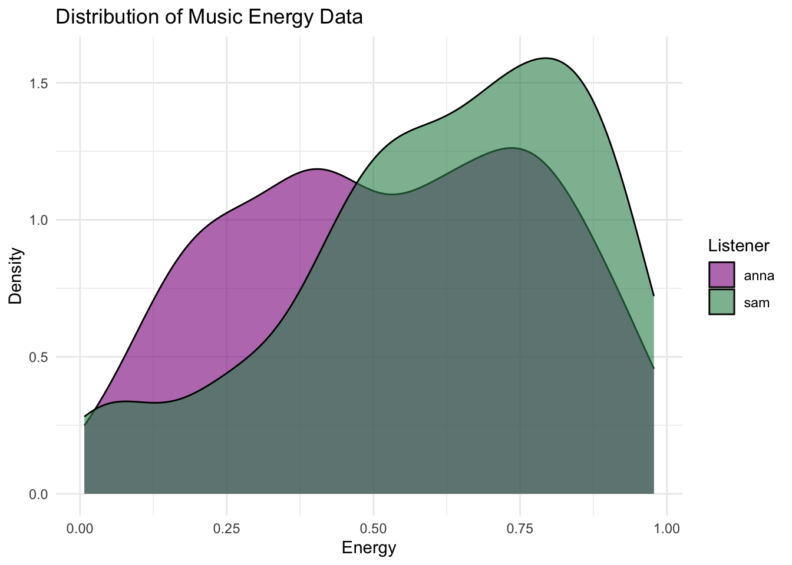
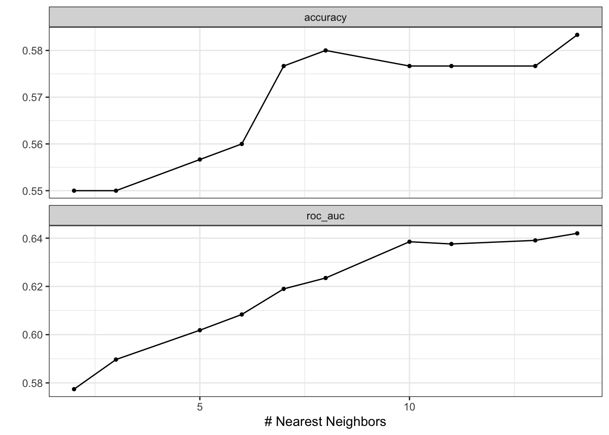
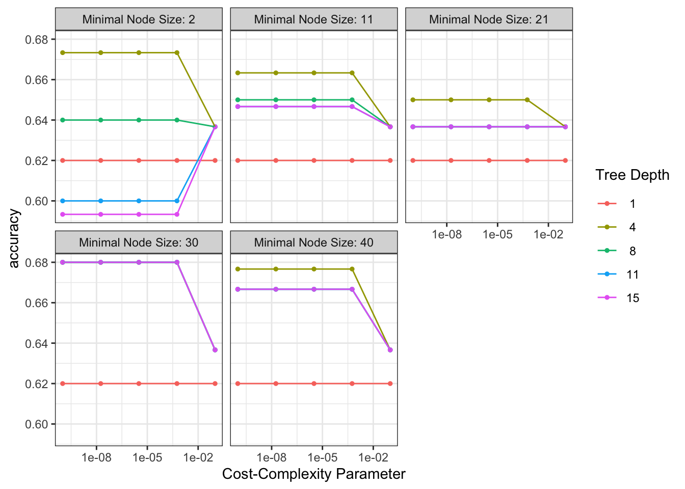
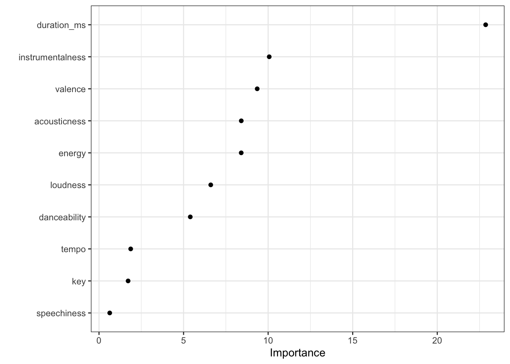
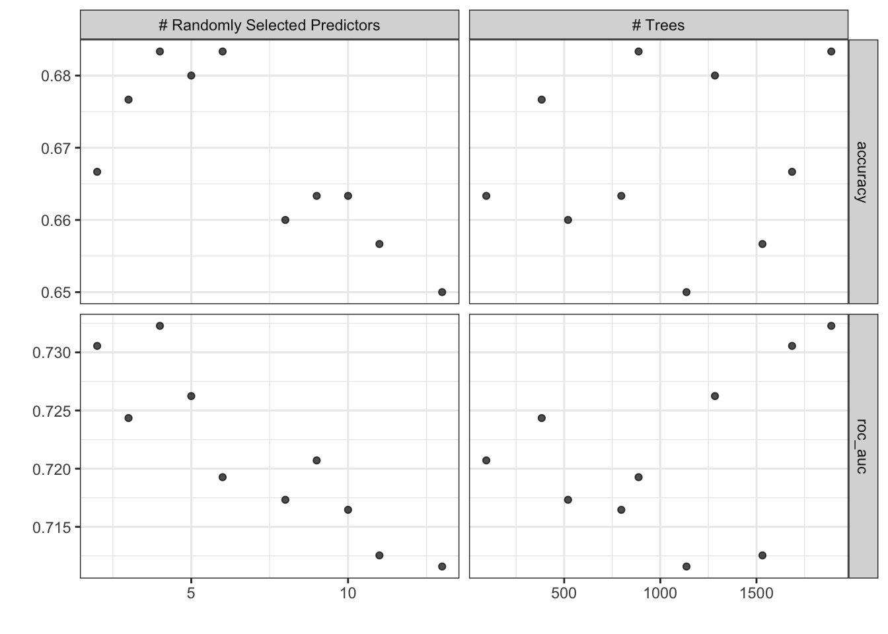
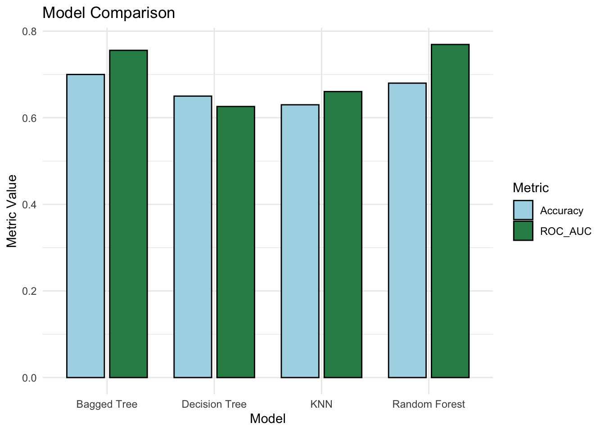
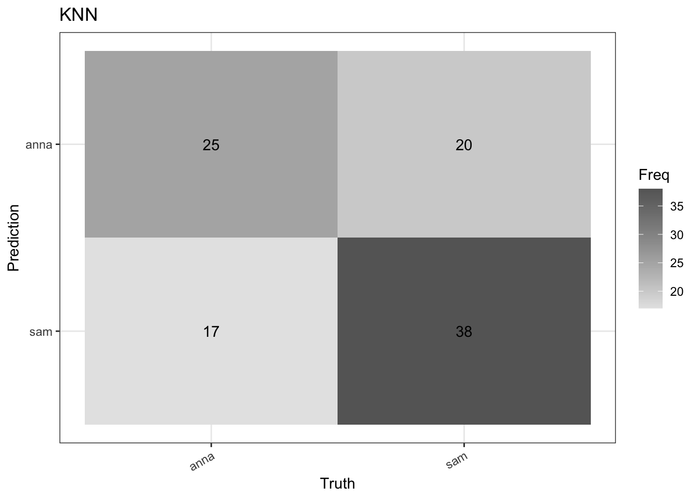
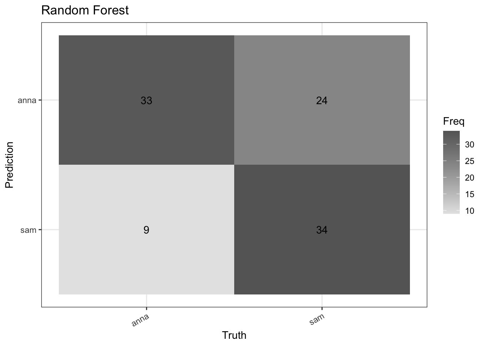
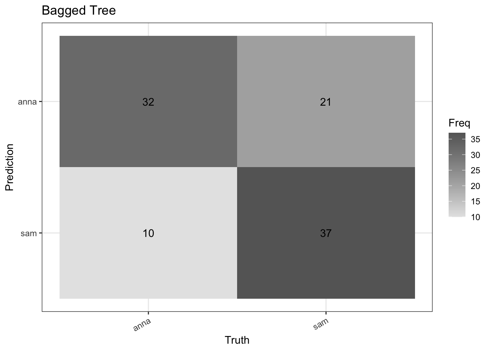

Sys.setenv(SPOTIFY_CLIENT_ID = SPOTIFY_CLIENT_ID)
Sys.setenv(SPOTIFY_CLIENT_SECRET = SPOTIFY_CLIENT_SECRET)
authorization_code <- get_spotify_authorization_code(scope = scopes()[c(1:19)]) #sets an authorization code that you'll need to provide for certain get_ functions via my_tracks <- get_my_saved_tracks(authorization = authorization_code)
access_token <- get_spotify_access_token() #takes ID and SECRET, sends to Spotify and receives an access tokenProject Overview
In this project, I am interested in building my machine learning skills through a fun exercise with Spotify!
Using my liked songs and my friends, can I build a machine learning model to predict whose playlist a song belongs to?
Data & Methods
For this project, I will be requesting data from the Spotify API using the {spotifyr} package and using the data to build k-nearest neighbor and decision tree models.
Data Preparation
Using get_my_saved_tracks(), the Spotify API returns a dataframe of tracks and associated attributes. However, it will only return up to 50 tracks at a time, so I will need to make multiple requests. To do this, I will use a function to combine all the requests in one call.
offsets = seq(from = 0, to = 150, by = 50)
#initializing an empty df
my_tracks <- data.frame(matrix(nrow = 0, ncol = 30))
# function to get my 150 most recently liked tracks
for (i in seq_along(offsets)) {
liked_tracks = get_my_saved_tracks(authorization = authorization_code, limit = 50,
offset = offsets[i])
df_temp = as.data.frame(liked_tracks) # creating a temporary data frame
my_tracks <- rbind(my_tracks, df_temp) # binding the temporary data frame to my tracks data frame
}Additionally, by giving the API a list of track IDs using get_track_audio_features(), I can get an audio features dataframe of all the tracks and some attributes of them.
audio1 <- get_track_audio_features(my_tracks$track.id[1:100])
audio2 <- get_track_audio_features(my_tracks$track.id[101:200])
audio_features <- rbind(audio1, audio2)These track audio features are the predictors we are interested in, but this dataframe doesn’t have the actual names of the tracks, so I need to append the ‘track.name’ column from my favorite tracks dataframe.
sam_audio <- my_tracks %>%
select(track.name) %>%
bind_cols(audio_features) %>%
mutate(name = "sam")One of my friends followed these same steps, and she sent me a .csv of her track audio features, which I will bind with my audio features dataframe.
# read in anna audio
anna_audio <- read_csv(here::here("projects/2024-04-13-spotify-predictions/named_audio_anna.csv")) %>%
mutate(name = "anna")
# bind mine and anna's data
both_audio <- rbind(sam_audio, anna_audio)Data Exploration
Now that the data is ready to go, let’s do a little data exploration. There are a lot of cool audio features to explore.
ggplot(both_audio, aes(x = danceability, fill = name)) +
geom_density(alpha=0.5) +
scale_fill_manual(values=c("magenta4", "seagreen"))+
labs(x="Danceability", y="Density", title = "Distribution of Music Danceability Data") +
guides(fill=guide_legend(title="Listener")) +
theme_minimal()
ggplot(both_audio, aes(x = energy, fill = name)) +
geom_density(alpha=0.6) +
scale_fill_manual(values=c("magenta4", "seagreen"))+
labs(x="Energy", y="Density", title = "Distribution of Music Energy Data") +
guides(fill=guide_legend(title="Listener")) +
theme_minimal()
rbind(anna_audio[which.max(anna_audio$danceability),],
sam_audio[which.max(sam_audio$danceability),]) %>%
select(track.name, danceability, name) %>%
gt::gt(caption = "Liked tracks with the highest danceability")| track.name | danceability | name |
|---|---|---|
| Chilling At Nemu's Place | 0.943 | anna |
| Als ich ein Kind war | 0.948 | sam |
Building Machine Learning Models
Modeling Prep
Further preparation is needed before running the models. First, I need to remove unnecessary columns including track urls and the track name. Next I’ll split the data into training and testing sets, using a 75:25 split. Finally, I’ll create my recipe, normalizing the nominal and numeric predictors and prep.
# prepare data ----
all_tracks_modeling <- both_audio %>%
mutate_if(is.ordered, .funs = factor, ordered = F) %>%
select(-track.name, -type, -id, -uri, -track_href, -analysis_url) %>%
mutate(name = as.factor(name))
# splitting the data ----
set.seed(123)
tracks_split <- initial_split(all_tracks_modeling, prop = 0.75)
tracks_train <- training(tracks_split)
tracks_test <- testing(tracks_split)
# create a recipe ----
tracks_recipe <- recipe(name ~ ., data = tracks_train) %>%
step_dummy(all_nominal_predictors()) %>%
step_normalize(all_numeric_predictors()) %>% #normalize numeric to make sure scale is okay
prep()K-Nearest Neighbor
The first model I want to build uses k-nearest neighbor. This is a classification problem (classifying the track as either belonging to my liked songs or my friends liked songs), so I will set_mode() to “classification” and set_engine() to “kknn”.
# Define our KNN model with tuning ----
knn_spec_tune <- nearest_neighbor(neighbor = tune()) %>%
set_mode("classification") %>%
set_engine("kknn")
# Check the model
#knn_spec_tuneNext I need to define my workflow by adding the model and recipe I defined above.
# Define a new workflow ----
wf_knn_tune <- workflow() %>%
add_model(knn_spec_tune) %>%
add_recipe(tracks_recipe)To hopefully increase the accuracy of my model, I will use 10 fold cross validation to further split and train on my data.
# 10-fold CV on the training dataset ----
set.seed(123)
cv_folds <- tracks_train %>%
vfold_cv(v = 10)Now that everything is ready to go, I can fit the workflow on the folds and check out the parameter tuning.
# Fit the workflow on our predefined folds and hyperparameters ----
fit_knn_cv <- wf_knn_tune %>%
tune_grid(resamples = cv_folds,
grid = 10)
# Check the performance with collect_metrics()
#collect_metrics(fit_knn_cv)
# plot cv results for parameter tuning ----
autoplot(fit_knn_cv) +
theme_bw()
Using the fit workflow, I can finalize and select the best iteration based on the ROC AUC and predict on the training and testing data.
# The final workflow for our KNN model ----
final_knn_wf <- wf_knn_tune %>%
finalize_workflow(select_best(fit_knn_cv, metric = "roc_auc"))
train_knn_fit <- fit(final_knn_wf, tracks_train)
train_predict <- predict(object = train_knn_fit, new_data = tracks_train) %>% #predict the training set
bind_cols(tracks_train) #bind training set column to prediction
test_knn_predict <- predict(train_knn_fit, tracks_test) %>% #get prediction probabilities for test
bind_cols(tracks_test) %>% #bind to testing column
mutate(name = as.factor(name))With my model now finalized, we can look at the accuracy of the training predictions compared to the testing predictions.
# report the accuracy for the training and testing ----
accuracy(train_predict, truth = name, estimate = .pred_class) #get training accuracy# A tibble: 1 × 3
.metric .estimator .estimate
<chr> <chr> <dbl>
1 accuracy binary 0.823accuracy(test_knn_predict, truth = name, estimate = .pred_class) #get accuracy of testing prediction# A tibble: 1 × 3
.metric .estimator .estimate
<chr> <chr> <dbl>
1 accuracy binary 0.63Here is the optimized workflow for the KNN model along with the result metrics.
# Optimizing workflow ----
final_knn_fit <- final_knn_wf %>%
last_fit(tracks_split)
# last_fit() fit on the training data but then also evaluates on the testing data
final_knn_result <- last_fit(final_knn_wf, tracks_split)
# testing predictions and metrics ----
#final_knn_result$.predictions
knn_predict_data <- as.data.frame(final_knn_result$.predictions) %>%
bind_cols(tracks_test)
final_knn_result$.metrics[[1]]
# A tibble: 2 × 4
.metric .estimator .estimate .config
<chr> <chr> <dbl> <chr>
1 accuracy binary 0.63 Preprocessor1_Model1
2 roc_auc binary 0.661 Preprocessor1_Model1Decision Tree
Let’s build another model! This time I am going to be building a decision tree and tuning model hyperparameters. The hyperparameters I have chosen to tune are cost complexity, tree depth, and the minimum number of data points in a node.
#new spec, tell the model that we are tuning hyperparams ----
tree_spec_tune <- decision_tree(
cost_complexity = tune(),
tree_depth = tune(),
min_n = tune()
) %>%
set_engine("rpart") %>%
set_mode("classification")
tree_grid <- grid_regular(cost_complexity(), tree_depth(), min_n(), levels = 5)
#head(tree_grid)Now I can define a new workflow and set up the k-folds
# setting up the workflow ----
wf_tree_tune <- workflow() %>%
add_recipe(tracks_recipe) %>%
add_model(tree_spec_tune)
# set up k-fold cv ----
tracks_cv <- tracks_train %>%
vfold_cv(v=10)
#tracks_cvSince the decision tree is more computationally expensive, I am going to be using parallel processing to help with grid tuning computation time.
# build trees ----
doParallel::registerDoParallel() #build trees in parallel
tree_rs <- tune_grid(
wf_tree_tune,
resamples = tracks_cv,
grid = tree_grid,
metrics = metric_set(accuracy)
)
# Use autoplot() to examine how different parameter configurations relate to accuracy ----
autoplot(tree_rs) +
theme_bw()
With the grid tuning finished I can select the best hyperparameters, finalize the workflow, fit the data, and make predictions on the testing data.
# select hyperparameter ----
#show_best(tree_rs) # showing
select_best(tree_rs) # what we'll input# A tibble: 1 × 4
cost_complexity tree_depth min_n .config
<dbl> <int> <int> <chr>
1 0.0000000001 4 30 Preprocessor1_Model081# finalize the model specification where we have replaced the tune functions with optimized values ----
final_tree <- finalize_workflow(wf_tree_tune, select_best(tree_rs))
#final_tree
# final fitting ----
final_tree_fit <- fit(final_tree, data = tracks_train)
# last_fit() fit on the training data but then also evaluates on the testing data
final_tree_result <- last_fit(final_tree, tracks_split)
# testing predictions and metrics ----
#final_tree_result$.predictions
final_tree_result$.metrics[[1]]
# A tibble: 2 × 4
.metric .estimator .estimate .config
<chr> <chr> <dbl> <chr>
1 accuracy binary 0.65 Preprocessor1_Model1
2 roc_auc binary 0.626 Preprocessor1_Model1predict_tree_data <- predict(final_tree_fit, tracks_test) %>% #get prediction probabilities for test
bind_cols(tracks_test) %>% #bind to testing column
mutate(name = as.factor(name))
#Visualize variable importance ----
final_tree_fit %>%
vip(geom = "point") +
theme_bw()
Bagged Tree
The third model I am going to build is a bagged tree model where I tune the cost complexity and the minimum number of data points in a node.
# set up the bagged tree model ----
bagged_tree <- bag_tree(
cost_complexity = tune(),
min_n = tune()
) %>%
set_engine("rpart", times = 50) %>%
set_mode("classification")Setting up the workflow and grid tuning.
# workflow ----
wf_bag_tune <- workflow() %>%
add_recipe(tracks_recipe) %>%
add_model(bagged_tree)
# set up the tuning ----
bag_grid <- grid_regular(cost_complexity(), min_n(), levels = 5)
bag_rs <- tune_grid(
wf_bag_tune,
resamples = tracks_cv,
grid = bag_grid,
metrics = metric_set(accuracy))Select the best hyperparameters, finalize the workflow, fit, and predict.
# select hyperparameter ----
#show_best(bag_rs) # showing
select_best(bag_rs) # what we'll input# A tibble: 1 × 3
cost_complexity min_n .config
<dbl> <int> <chr>
1 0.00000316 11 Preprocessor1_Model08# finalize the model specification ----
final_bag <- finalize_workflow(wf_bag_tune, select_best(bag_rs))
#final_bag
# final fitting ----
final_bag_fit <- fit(final_bag, data = tracks_train)
# last_fit() fit on the training data but then also evaluates on the testing data
final_bag_result <- last_fit(final_bag, tracks_split)
# testing predictions and metrics ----
bag_data <- predict(final_bag_fit, tracks_test) %>% #get prediction probabilities for test
bind_cols(tracks_test) %>% #bind to testing column
mutate(name = as.factor(name))
#final_bag_result$.predictions
# report final metrics ----
final_bag_result$.metrics[[1]]
# A tibble: 2 × 4
.metric .estimator .estimate .config
<chr> <chr> <dbl> <chr>
1 accuracy binary 0.7 Preprocessor1_Model1
2 roc_auc binary 0.756 Preprocessor1_Model1Random Forest
Finally, I am going to be building a random forest model where I tune the number of trees and the number of predictors that will be randomly sampled at each split.
# random forest ----
rf_model <- rand_forest(mtry = tune(),
trees = tune()) %>%
set_engine("ranger") %>%
set_mode("classification")Contain the model and recipe in a workflow and grid tuning.
# workflow ----
rf_workflow <- workflow() %>%
add_model(rf_model) %>%
add_recipe(tracks_recipe)
# parameter tuning ----
rf_cv_tune <- rf_workflow %>%
tune_grid(resamples = cv_folds, grid = 10) #use cross validation to tune mtry and trees parameters
#get metrics from tuning cv to pick best model ----
#collect_metrics(rf_cv_tune)
#plot cv results for parameter tuning ----
autoplot(rf_cv_tune) +
theme_bw()
Finalize the workflow, fit, and predict.
# finalize workflow ----
rf_best <- show_best(rf_cv_tune, n = 1, metric = "roc_auc") #get metrics for best random forest model
rf_best# A tibble: 1 × 8
mtry trees .metric .estimator mean n std_err .config
<int> <int> <chr> <chr> <dbl> <int> <dbl> <chr>
1 4 1889 roc_auc binary 0.732 10 0.0332 Preprocessor1_Model04rf_final <- finalize_workflow(rf_workflow,
select_best(rf_cv_tune, metric = "roc_auc"))
# model fitting ----
train_fit_rf <- fit(rf_final, tracks_train) #fit the KNN model to the training set
#train_fit_rf
# prediction probabilities ----
test_predict_rf <- predict(train_fit_rf, tracks_test) %>% #get prediction probabilities for test
bind_cols(tracks_test) %>% #bind to testing column
mutate(name = as.factor(name))
test_predict2_rf <- predict(train_fit_rf, tracks_test, type = "prob") %>% #get testing prediction
bind_cols(tracks_test) %>% #bind to testing column
mutate(name = as.factor(name))
# model metrics and evaluation
#accuracy(test_predict_rf, truth = name, estimate = .pred_class) #get accuracy of testing prediction
rf_final_result <- last_fit(rf_final, tracks_split)
# testing predictions and metrics ----
#rf_final_result$.predictions
rf_predict_data <- as.data.frame(rf_final_result$.predictions) %>%
bind_cols(tracks_test)
rf_final_result$.metrics[[1]]
# A tibble: 2 × 4
.metric .estimator .estimate .config
<chr> <chr> <dbl> <chr>
1 accuracy binary 0.68 Preprocessor1_Model1
2 roc_auc binary 0.769 Preprocessor1_Model1# roc auc curve
test_roc_auc_rf <- roc_curve(test_predict2_rf, name, .pred_anna)Comparison of model performance
Now that all of the models are built, we can compare their performance. Let’s start by pulling out the metrics from the model results and compare the accuracy of the four models.
# store the final result metrics
knn_metrics <- final_knn_result$.metrics[[1]]
tree_metrics <- final_tree_result$.metrics[[1]]
bag_metrics <- final_bag_result$.metrics[[1]]
rf_metrics <- rf_final_result$.metrics[[1]]
# combine metrics into df for table
comparison_data <- data.frame(
Model = c("KNN", "Decision Tree", "Bagged Tree", "Random Forest"),
Accuracy = c(knn_metrics$.estimate[1], tree_metrics$.estimate[1], bag_metrics$.estimate[1], rf_metrics$.estimate[1]),
ROC_AUC = c(knn_metrics$.estimate[2], tree_metrics$.estimate[2], bag_metrics$.estimate[2], rf_metrics$.estimate[2])
)
# make table
comparison_data %>%
gt() %>%
tab_header(
title = "Model Comparison",
subtitle = "Accuracy and ROC AUC on Testing Data"
) %>%
fmt_number(
columns = c(Accuracy, ROC_AUC),
decimals = 3
)| Model Comparison | ||
| Accuracy and ROC AUC on Testing Data | ||
| Model | Accuracy | ROC_AUC |
|---|---|---|
| KNN | 0.630 | 0.661 |
| Decision Tree | 0.650 | 0.626 |
| Bagged Tree | 0.700 | 0.756 |
| Random Forest | 0.680 | 0.769 |
Additionally, we can visualize our model comparison and look at the confusion matrices for each model.
# pivot data for plottig
comparison_data_long <- comparison_data %>%
pivot_longer(cols = c(Accuracy, ROC_AUC), names_to = "Metric", values_to = "Value")
# plotting
ggplot(comparison_data_long, aes(x = Model, y = Value, fill = Metric)) +
geom_bar(stat = "identity", position = position_dodge(width = 0.8), width = 0.7, color = "black") +
labs(title = "Model Comparison",
y = "Metric Value") +
theme_minimal() +
scale_fill_manual(values = c("lightblue", "seagreen"))
# confusion matrix
test_knn_predict %>%
conf_mat(truth = name, estimate = .pred_class) %>%
autoplot(type = 'heatmap') +
theme_bw() +
theme(axis.text.x = element_text(angle = 30, hjust = 1)) +
labs(title = "KNN")
test_predict_rf %>%
conf_mat(truth = name, estimate = .pred_class) %>% #create confusion matrix
autoplot(type = "heatmap") + #plot confusion matrix with heatmap
theme_bw() + #change theme
theme(axis.text.x = element_text(angle = 30, hjust=1)) +
#rotate axis labels
labs(title = "Random Forest")
bag_data %>%
conf_mat(truth = name, estimate = .pred_class) %>%
autoplot(type = 'heatmap') +
theme_bw() +
theme(axis.text.x = element_text(angle = 30, hjust = 1)) +
labs(title = "Bagged Tree")
predict_tree_data %>%
conf_mat(truth = name, estimate = .pred_class) %>%
autoplot(type = 'heatmap') +
theme_bw() +
theme(axis.text.x = element_text(angle = 30, hjust = 1)) +
labs(title = "Decision Tree")# bag_conf + knn_conf + rf_conf + tree_confThoughts and Conclusions
This was a fun project and got me more familiar with machine learning packages in R and modeling methods. I want to explore the Spotify data more, since there are so many more functions and attributes I haven’t explored. Happy listening!
Citation
BibTeX citation:
@online{muir2024,
author = {Muir, Sam},
title = {Who’s on {AUX?} {Using} Machine Learning to Predict Whose
{Spotify} Playlist a Song Belongs To},
date = {2024-04-13},
url = {https://shmuir.github.io/projects/2024-04-13-spotify-predictions/},
langid = {en}
}
For attribution, please cite this work as:
Muir, Sam. 2024. “Who’s on AUX? Using Machine Learning to Predict
Whose Spotify Playlist a Song Belongs To.” April 13, 2024. https://shmuir.github.io/projects/2024-04-13-spotify-predictions/.